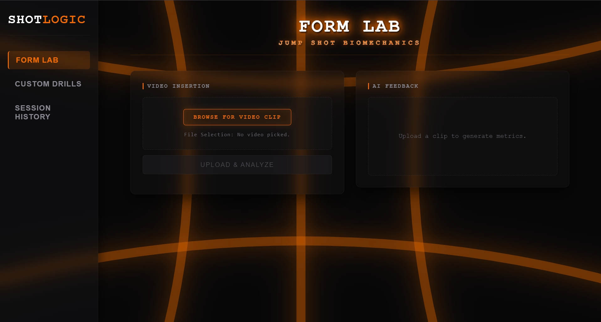
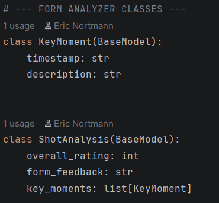
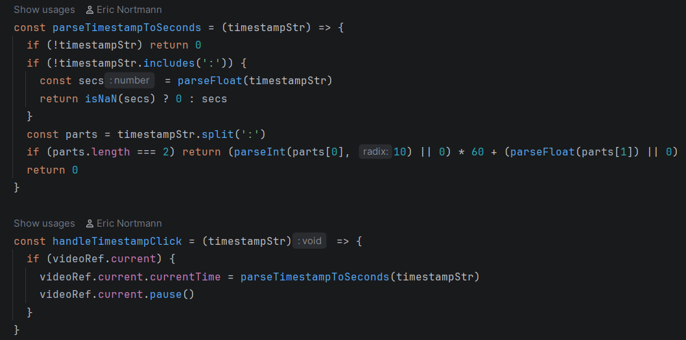
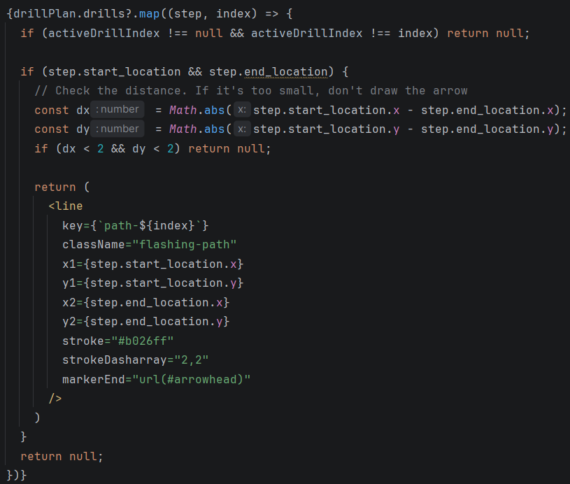

In the summer when this project was made I picked up basketball as a hobby and started playing on a intramural co rec team.
While I was playing, I realized that when im shooting I can't see my shot form while im shooting, thats why I decided to create ShotLogic.
It runs the Google Gemini API to provide real-time feedback and analysis of the player's shooting technique, it can also provide custom drills for you to follow based on areas of improvement.
Here is a look at the application in action, featuring the Form Lab video analysis and the AI-powered tactical drill generator:
To ensure the React frontend does not break from unpredictable LLM text responses, I engineered a Python backend using FastAPI. By implementing strict Pydantic models, I force the AI to return perfectly structured JSON data, guaranteeing that variables like the overall rating and feedback strings map flawlessly to the frontend state.

To make the AI feedback actionable, I developed a custom parser that binds the AI-generated timestamps directly to the React HTML5 video player reference. When a user clicks on a specific mechanical event in their timeline, the application automatically scrubs the video to that exact frame.

Instead of simply listing drills as text, I built an interactive tactical playbook. The AI assigns strict X/Y coordinates to player movements, and the React frontend iterates over that data to dynamically render animated SVG paths, arrows, and waypoints directly onto a virtual court interface.
